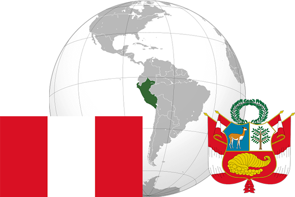

To`liq nomi: Peru Respublikasi
Region: Janubiy Amerikaning Gʻarbiy qismi
Qonunchilik shakli: Respublika
Mustaqillik kuni: 28 iyul 1821 (Ispaniyadan)
Poytaxt: Lima
Maydoni: 1,285,216 km²
Chegaradosh davlatlari: Braziliya, Kolumbiya, Ekvador, Chili, Boliviya.
Aholisi: 30 741 062 (2017-yil)
Aholi zichligi: 23 /км²
Aholining o`rtacha umri: 74,77 yil (2015-yil)
Rasmiy tili: Ispan tili
Dini: Xristian
Pul birligi: Sol
Telefon prefiksi: + 51
Internet domen: .pe
Xalqaro tashkilotlarga a`zoligi: BMT
Dengiz va okeanlarga chiqishi: Tinch okeani
YIM: Butun: $221.7 mlrd (2017-yil) Jon boshiga: $6,892
Yirik shaharlari: Lima, Arekuipa, Truxillo